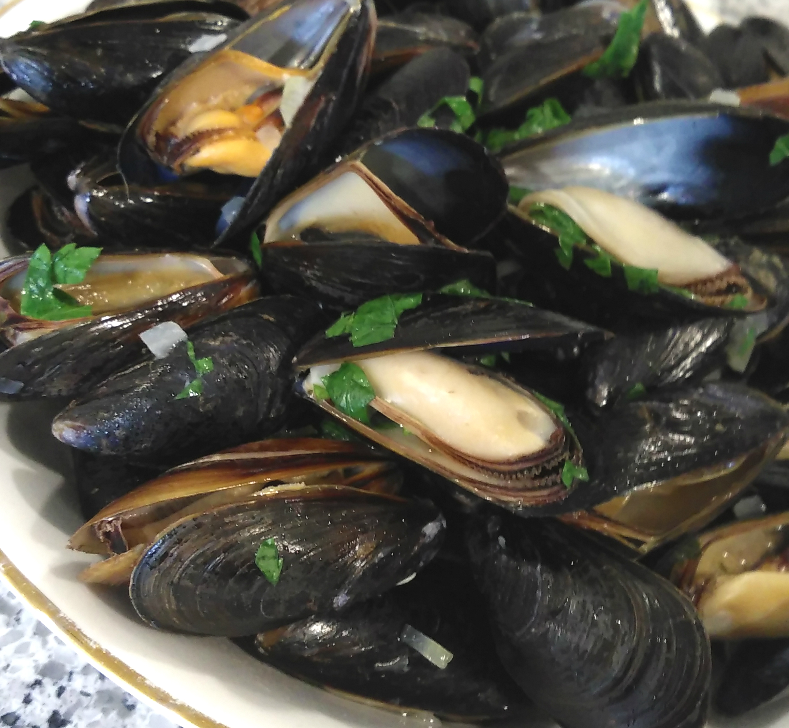

Mussels Mariniere

Description
Want a simple but delicious seafood dish?
This amazing yet surprisingly simple recipe is one you might love. It can serve 4 people
Ingredients
- 4 Quards Mussels, Cleaned and Debearded
- 2 Cloves Garlic, Minced
- 1 Onion, Chopped
- 6 Tablespoons Chopped Fresh Parsley
- 1 Bay Leaf
- 1/4 Teaspoon Dried Thyme
- 2 Cups White Wine
- 3 Tablespoons Butter, Divided
Steps
- Scrub mussels. Pull off beards, the tuft of fibers that attach each mussel to it's shell, cutting them at the base with a paring knife. Discard those that do not close when you handle them and any with broken shells. Set aside.
- Combine onion, garlic, 4 tablespoons parsley, bay leaf, thyme, wine, and 2 tablespoons butter in large pot. Bring to boil. Lower heat, and cook 2 minutes. Add mussels, and cover. Cook just until shells open, 3 to 4 minutes. Do not overcook. Remove mussels from sauce, and place in bowls.
- Strain liquid, and return to pot. Add remaining butter and parsley. Heat until butter melts. Pour over mussels.
Back to index page